【PHPDocのフォーマット】
はじめに
当フレームワークではPHPDocをコメントフォーマットとして採用していますので、ライブラリ上のPHPDocの出力結果を>> Referenceとして公開しています。
以下ではコメント記載時の備忘録として、IDEの１つであるVSCodeのツールチップとPHPDoc出力後のイメージを抱き合わせで掲載しています。
以下ではコメント記載時の備忘録として、IDEの１つであるVSCodeのツールチップとPHPDoc出力後のイメージを抱き合わせで掲載しています。
動作環境
- プラットフォーム
- Windows10
- PHPDoc
- phpDocumentor v3.5.3
- IDE
- VSCode v1.94.0
PHPDoc出力コマンド
ファイル構成が以下の場合。
※
- phpDocumentorの実行ファイル
- カレントディレクトリ
- ソースファイル
- カレントの
srcディレクトリ内 - PHPDoc出力先
- カレントの
docディレクトリ内
> php ./phpDocumentor.phar run -d ./src -t ./doc
※
phpDocumentor.pharのファイルは>> こちらのページからダウンロードできます。
ヘッダコメント
ファイルヘッダ
<?php
/**
* ファイルのタイトル的なもの
*
* ファイル内容の説明的なもの
*
* @license GPL
* @license http://opensource.org/licenses/gpl-license.php GNU Public License
* @author 名前 <my.name@example.com>
* @copyright 1997-2005 The PHP Group
*/
- ・コメントフォーマット
-
- ファイルのタイトル的なもの
-
概要を簡潔に１行以内に収めるのが好ましい。
- ファイル内容の説明的なもの
- 説明文や補足的なものを書く。
- ・タグフォーマット
-
- @license [<url>] [name]
-
ファイル単位で書くのが好ましい。
複数ライセンスの存在があり得る。
url（省略可能）にはライセンス対象のURLを書く。
- @author [name] [<email address>]
- [name]は省略可能。
- @copyright [description]
- －ツールチップ－
-
なし
- －出力イメージ－
-
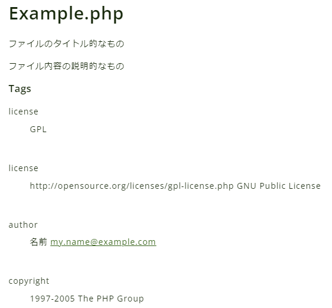
クラスヘッダ（親クラスがある場合）
/**
* 子クラスのタイトル的なもの
*
* 子クラスの説明的なもの
*
* @property string $my_property 子クラス側のプロパティ説明
* @method string getString() 子クラス側の文字列データ取得メソッドの説明
* @method void setString(string $data) 子クラス側の文字列データ設定メソッドの説明
*/
class ChildClass extends ParentClass
- ・コメントフォーマット
-
- 子クラスのタイトル的なもの
-
概要を簡潔に１行以内に収めるのが好ましい。
- 子クラス内容の説明的なもの
- 説明文や補足的なものを書く。
- ・タグフォーマット
-
- @property [Type] [name] [<description>]
-
__getまたは__setマジックメソッドが親クラスに存在する場合、有効なプロパティを指定する。
- @method [return type] [name]([[type] [parameter]<, ...>]) [
] -
__callマジックメソッドが親クラスに存在する場合、呼び出し可能なメソッドを指定する。
- －ツールチップ－
-
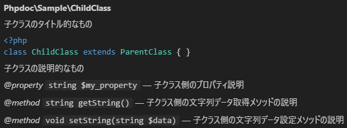
- －出力イメージ－
-
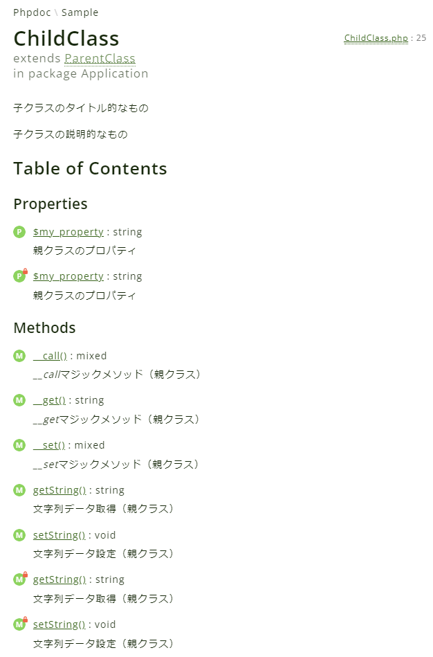
鍵マークが付いているのが親クラスのprivateメンバーです。
マジックメソッドも含めて親クラスのメンバーと混合で表示されるので注意が必要。
関数（またはメソッド）ヘッダ
/**
* 関数（またはメソッド）のタイトル的なもの
*
* 関数（またはメソッド）の説明的なもの
*
* @since 1.0.2 $type_int引数の追加
* @since 1.0.1 $type_string引数の追加
* @since 1.0.0
*
* @param string $type_string 文字列データ
* @param int $type_int 整数データ
* @param bool $type_bool ブール値（true or false）データ
* @param float $type_float 浮動小数点数データ
* @param object $type_object 型を特定しないインスタンスデータ
* @param mixed $type_mixed 型を特定しないデータ
* @param array $type_array 配列データ
* @param callable $type_callable コールバック
* @param self $type_self 自身のインスタンスデータ
* @return string | null 文字列データ or null
* @throws Exception ネイティブな例外クラス
* @throws \Phpdoc\Sample\CustomException カスタム例外クラス
*/
public function exampleFunction
(
string $type_string,
int $type_int,
bool $type_bool,
float $type_float,
object $type_object,
$type_mixed,
array $type_array,
$type_callable,
self $type_self
)
- ・コメントフォーマット
-
- 関数（またはメソッド）のタイトル的なもの
-
概要を簡潔に１行以内に収めるのが好ましい。
- 関数（またはメソッド）内容の説明的なもの
- 説明文や補足的なものを書く。
- ・タグフォーマット
-
- @since [version] [<description>]
-
バージョンに伴う更新履歴。
- @param [Type] [name] [<description>]
-
引数の型、変数名、説明を記載する。
- @return [Type] [<description>]
-
戻り値の型、説明を記載する。
型はor演算子（'|'）で区切って複数指定可能。 - @throws [Type] [<description>]
- 例外の型、説明を記載する。
- －ツールチップ－
-
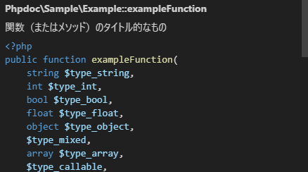
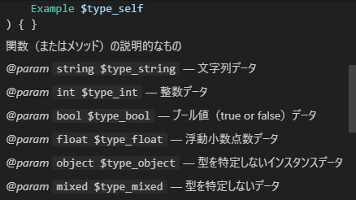
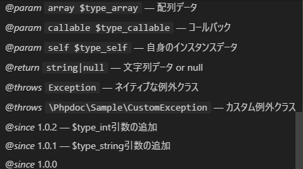
- －出力イメージ－
-
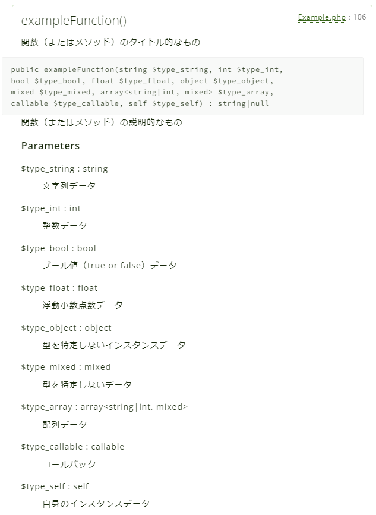
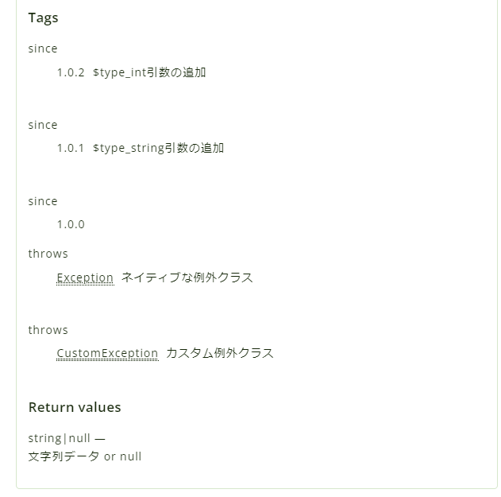
プロパティ
共通タグフォーマット
- @var [Type] [$element_name] [<description>]
-
[Type]データ型
[$element_name]プロパティ名
[<description>]データの説明
文字列（string）型
/**
* 文章での説明が必要な時はここに書く
*
* @var string | null $type_string 文字列データ or null
*/
public ?string $type_string;
- －ツールチップ－
-
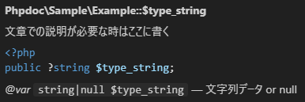
- －出力イメージ－
-
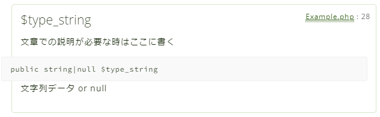
整数（int）型
/** @var int $type_int 整数データ */
public int $type_int;
- －ツールチップ－
-
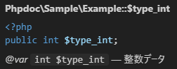
- －出力イメージ－
-
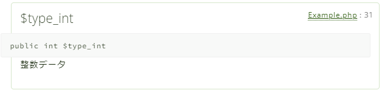
ブール（bool）型
/** @var bool $type_bool ブール値（true or false）データ */
public bool $type_bool;
- －ツールチップ－
-
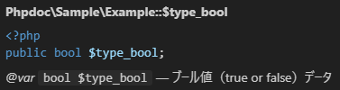
- －出力イメージ－
-
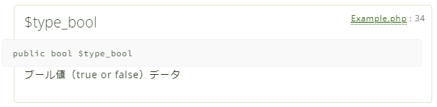
浮動小数点数（float）型
/** @var float $type_float 浮動小数点数データ */
public float $type_float;
- －ツールチップ－
-
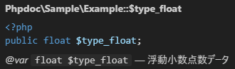
- －出力イメージ－
-
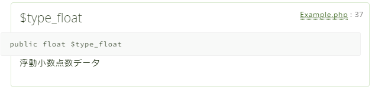
オブジェクト（object）型
/** @var object $type_object 型を特定しないインスタンスデータ */
public object $type_object;
- －ツールチップ－
-
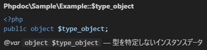
- －出力イメージ－
-
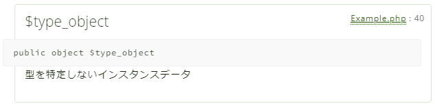
型指定なし（mixed）
/** @var mixed $type_mixed 型を特定しないデータ */
public $type_mixed;
- －ツールチップ－
-
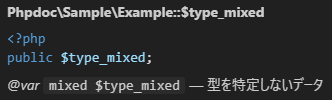
- －出力イメージ－
-
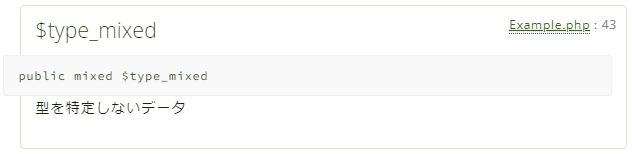
配列（array）型
/** @var array $type_array 配列データ */
public array $type_array;
- －ツールチップ－
-
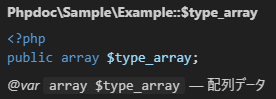
- －出力イメージ－
-
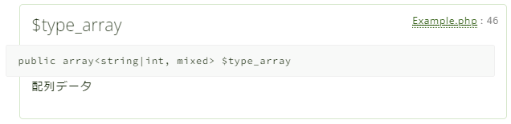
コールバック（callable）型
/** @var callable $type_callable コールバック */
public $type_callable;
- －ツールチップ－
-
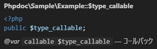
- －出力イメージ－
-
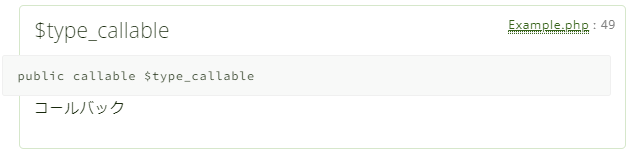
共通（インライン可能）タグ
/**
* 共通（インライン可能）タグ用
*
* * リスト表示１行目です
* * リスト表示２行目です
*
* ---
*
* １行目
* ２行目のつもり
*
* ３行目
*
* ---
*
* # マークダウン１
*
* 親クラスのプロパティ（{@see ParentClass::$items 継承プロパティ}）を継承します。
*
* ## マークダウン２
*
* リンク先のドキュメント（{@link http://example.com/ ドキュメント}）をご覧ください。
*
* ### マークダウン３
*
* @see http://example.com/ ドキュメントのタイトルなど
* @see ParentClass::$items 関連するクラスプロパティの説明
* @see ParentClass::setItems() 関連するクラスメソッドの説明
* @link http://example.com/ リンク先ページ名
*/
protected $items;
- ・マークダウン記法
-
- * <description>
-
リスト（箇条書き）で表示可能。
- ---
- 横線を引く事が可能。
- # <title>
- 大きな文字で見出し表示可能。
- ## <title>
- ２番目に大きな文字で見出し表示可能。
- ### <title>
- ３番目に大きな文字で見出し表示可能。
- 改行指定
-
空行を挟む事によって改行表示となる。
空行を挟まない場合は１行とみなされる。
- ・タグフォーマット
-
- @see [URI | FQSEN] [<description>]
-
FQSENは完全修飾要素名。
{}括弧で囲む事によってインライン指定可能。
[URI | FQSEN]は省略可能。 - @link [URI] [<description>]
-
参考資料等のリンクURIとリンク文字を指定可能。
{}括弧で囲む事によってインライン指定可能。
- －ツールチップ－
-
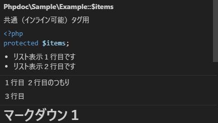
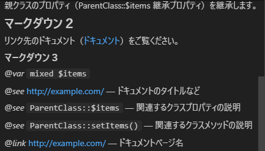
- －出力イメージ－
-